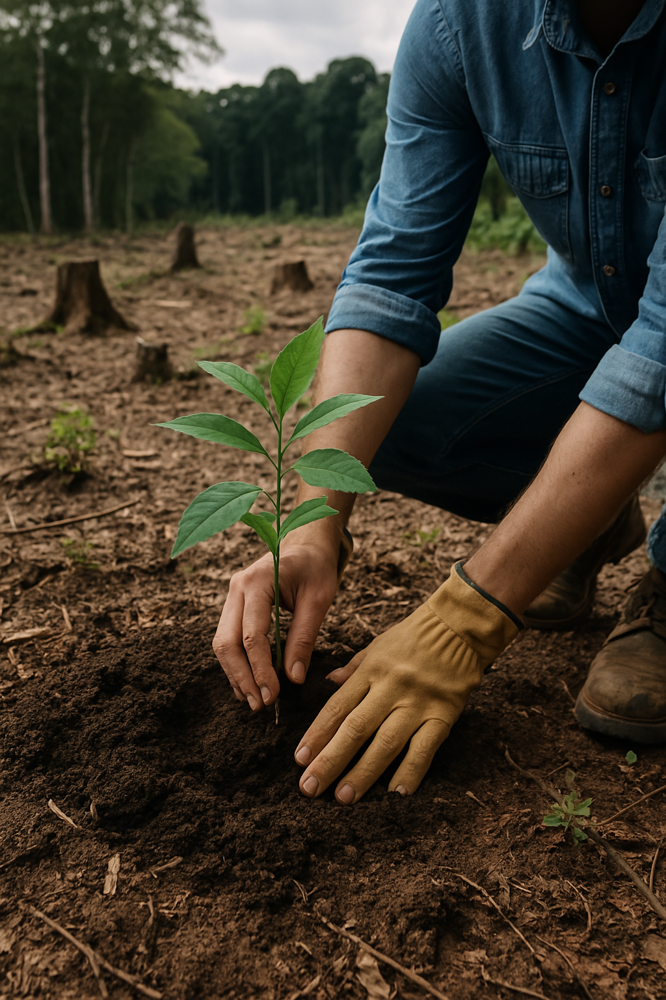
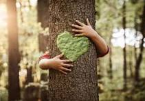

Endangered forests are vital ecosystems threatened by deforestation, climate change, illegal logging, mining, and fires, leading to biodiversity loss, climate disruptions, and soil degradation. Key forests at risk include the Amazon, Congo Basin, Sundaland, Boreal, and Daintree rainforests. Their destruction accelerates global warming and disrupts the water cycle. Conservation efforts like reforestation, protected reserves, sustainable logging, indigenous involvement, and global policies (e.g., Paris Agreement, REDD+) aim to restore and protect these crucial habitats. Urgent action is needed to preserve these forests for future generations.
Contributing to forest conservation involves actions like planting trees, supporting organizations dedicated to preserving forests, and practicing sustainable consumption by choosing eco-friendly products and reducing paper use. Advocating for stronger environmental policies, supporting ethical brands, and minimizing waste also help protect forests. Additionally, educating yourself and others about the importance of forests, supporting eco-tourism, and adopting a forest through donation programs are effective ways to make a positive impact. Every effort, no matter how small, contributes to the protection and preservation of our vital forest ecosystems.
Various conservation projects are actively working to protect forests. Forest preservation and conservation involve protecting, maintaining, and restoring forest ecosystems to ensure their long-term health and sustainability, benefiting both humans and the environment.
| Project Name | Location | Details |
|---|---|---|
| Forest Conservation Fund | Global | Learn More |
| Amazon Forest Protection Project | Brazil | Learn More |
| Ecoflix | Cambodia | Learn More |
| Wildlife Trust of India (WTI) Projects | India | Learn More |
| JICA Supported Forestry Projects | India | Learn More |